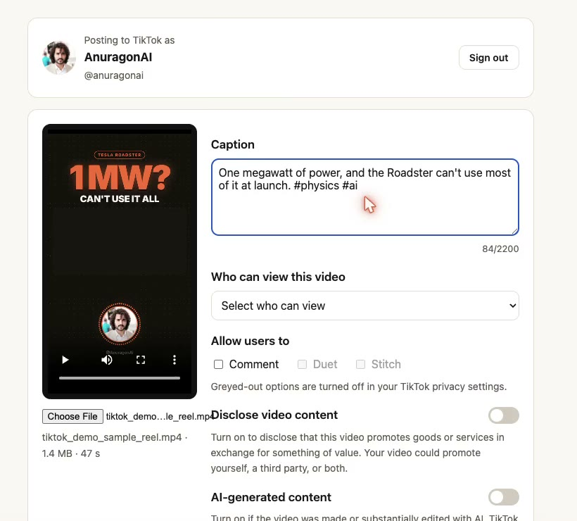
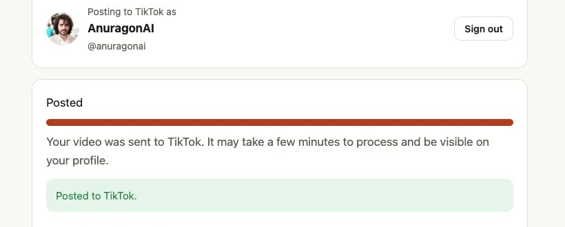

A tool by Anurag on AI
AnuragOnAI Publisher
A web app for creators who finish their videos on a computer: sign in with TikTok, preview the video, write the caption, choose who can view it and which interactions to allow, add any commercial-content disclosure, and post it to your own TikTok account. Or send it to your TikTok drafts and finish it in the app.
Open AnuragOnAI PublisherHow it works

How it works
- Sign in with TikTok. You approve access on TikTok's own page (Login Kit). The app asks only for your basic profile and permission to upload and post the videos you choose.
- See who you are posting as. The app shows your TikTok nickname and avatar, and reads your current posting options from TikTok: the privacy levels your account allows, whether comments, Duet and Stitch are available, and the maximum video length.
- Compose. Pick a finished video and preview it. Write the caption (up to 2,200 characters). Choose who can view it from the options TikTok gives your account; there is no default. Comment, Duet and Stitch start off; options your TikTok settings turn off are greyed out.
- Disclose. If the video promotes your own brand or a third party, turn on the commercial-content disclosure so TikTok labels it "Promotional content" or "Paid partnership". If the video was made or substantially edited with AI, turn on the AI-generated content label.
- Post. Nothing is sent until you press "Post to TikTok" and agree to TikTok's Music Usage Confirmation (and Branded Content Policy when it applies). The app uploads the video, shows the progress, and reports when TikTok has published it.
- Or send it to your drafts. Choose "Send to TikTok drafts" and the video lands in your TikTok inbox, where you add the caption, edit and post it in the TikTok app.

TikTok permissions it uses
| Permission | What it is used for |
|---|---|
user.info.basic | Your display name and avatar, so you can see which account you are posting to. |
video.publish | Direct Post: publishing the video you chose, with your caption and settings, when you press Post. |
video.upload | "Send to TikTok drafts": uploading the video to your TikTok inbox so you can finish it in the TikTok app. |
What it never does
- It never posts on its own or on a schedule you did not set: every post starts with your click.
- It does not like, follow, comment or message on your behalf.
- It does not sell or share your data, and has no ads, analytics or tracking cookies.
- "Sign out" revokes the app's access to your TikTok account and deletes your session from our server.
Who it is for
Any TikTok creator who edits on a computer and wants a clear, desktop way to post. We built it for our own channel, Anurag on AI, and use it to post our Shorts to TikTok; anyone can sign in with their own TikTok account and use it the same way. It is free.
Support
Questions or problems: aiautomationofficial27@gmail.com. Read the privacy policy and terms of service.